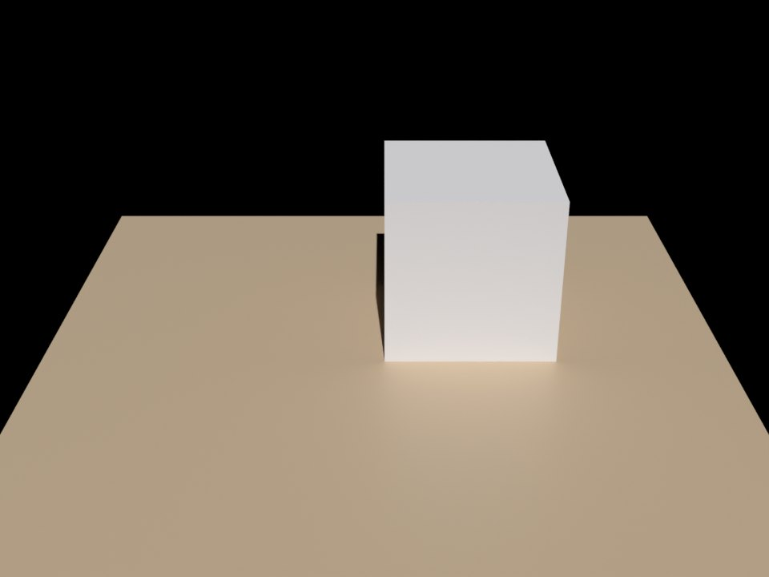
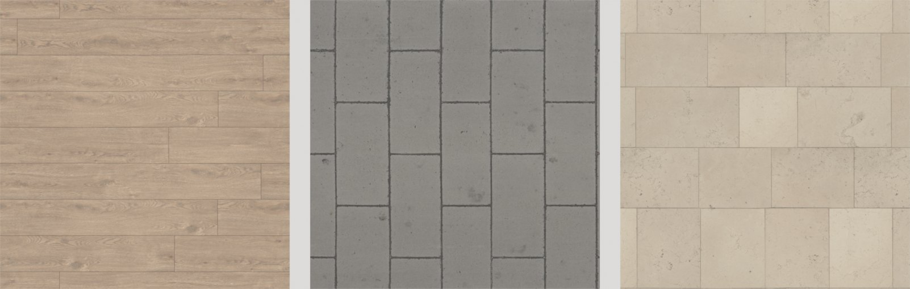
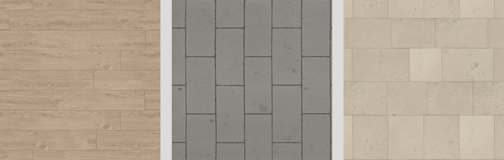
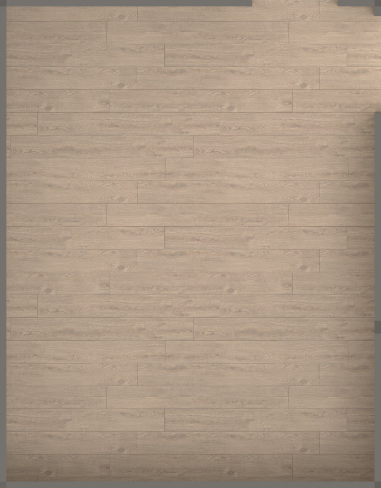
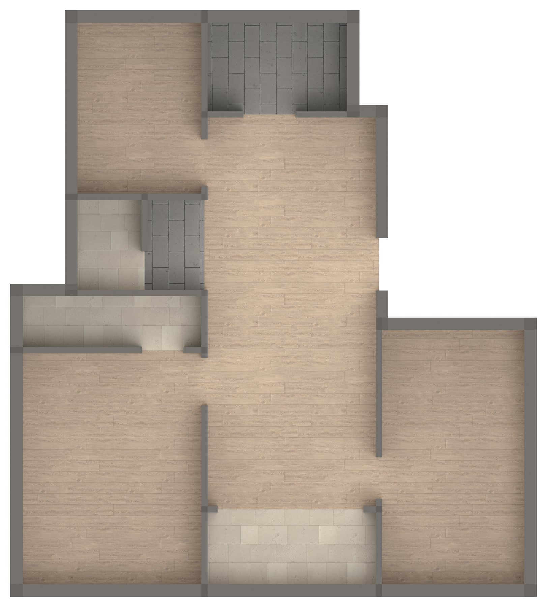
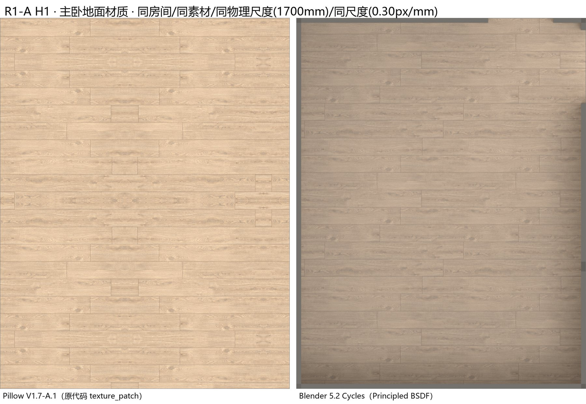
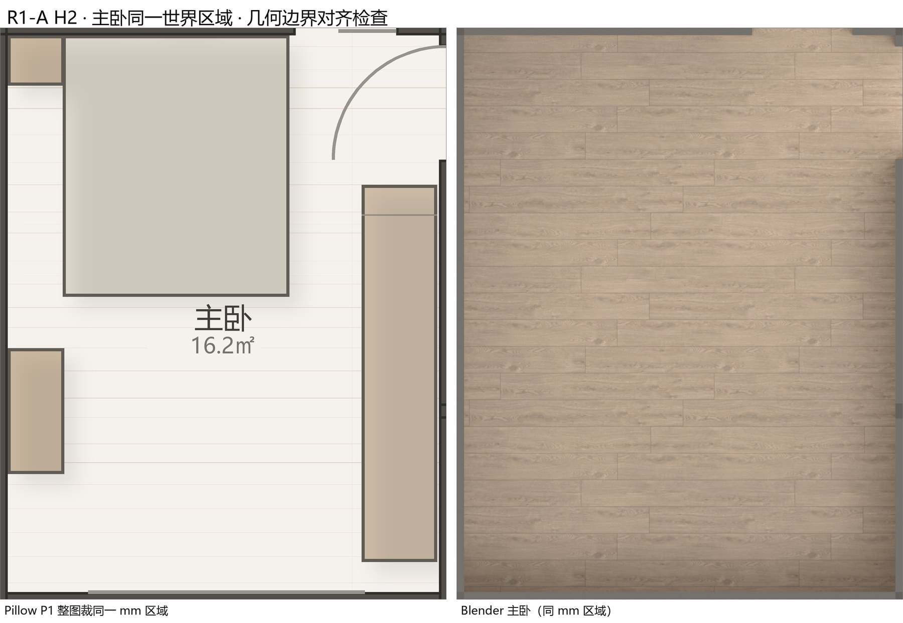
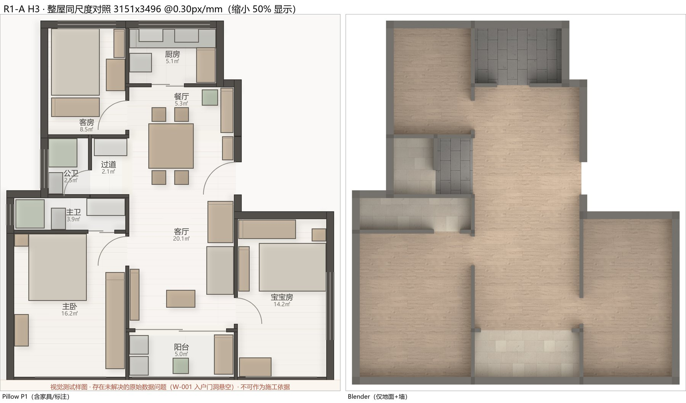

专业渲染引擎路线首轮最小实验 ｜ 生成时间 2026-10-14 19:13 ｜ Blender 5.2.2 LTS（Windows x64）｜ 产出方式：无头脚本自动生成（blender -b --python）

R1A-G1 · 基础场景验证：几何 + Principled BSDF 材质 + 中性照明 + 正交/透视相机，全部由脚本无头生成

R1A-G2 · 同一批 CC0 素材经 Blender Principled BSDF 表现：浅橡木 1700mm / 浅灰砖 1825mm / 浅石材 1500mm

R1A-G2b · 材质细节：板缝、木纹层次、粗糙度与轻微凹凸（凹凸派生自 diffuse 亮度，非实测法线）

R1A-G3 · 真实房间正交俯视：几何取自独立转换器的「矩形 − 墙带」推导；墙高为 DEMO_HEIGHT 示意值

R1A-G4 · 全屋 9 间 DERIVED_VERIFIED 房间 + 38 段墙体带，与旧路线同世界坐标系、同像素尺度

R1A-H1 · 同房间 / 同素材 / 同物理尺度 1700mm / 同像素尺度 0.30px/mm：左=旧路线原代码输出，右=Blender

R1A-H2 · 左为旧路线整图按同一 mm 范围裁剪，右为 Blender 单间渲染；两者像素尺寸完全相同，可直接比对墙线位置

R1A-H3 · 同尺度整屋对照。注意：渲染内容不同（旧路线含家具与标注），仅用于地面与墙体的表现比较
| 样本 | 尺寸 | 平均 RGB | 平均亮度 | 饱和度代理 |
|---|---|---|---|---|
| pillow_mbr_floor | [1065, 1365] | [222.08, 193.33, 161.89] | 198.35 | 0.271 |
| blender_mbr_floor | [1065, 1365] | [170.17, 151.38, 132.86] | 154.89 | 0.2192 |
| blender_mbr_floor_inner | [945, 1245] | [176.37, 156.47, 136.96] | 160.2 | 0.2235 |
| pillow_mbr_region_crop | [1065, 1365] | [214.38, 208.64, 200.23] | 209.4 | 0.066 |
| pillow_whole | [3151, 3496] | [214.0, 209.7, 203.5] | 210.28 | 0.049 |
| blender_whole | [3151, 3496] | [187.58, 176.22, 164.47] | 178.28 | 0.1232 |
板缝间距（纹理物理尺度）：旧路线 64 px ≈ 213.3 mm ｜ Blender 16 px ≈ 53.3 mm（0.30px/mm 下 1px = 3.33mm）